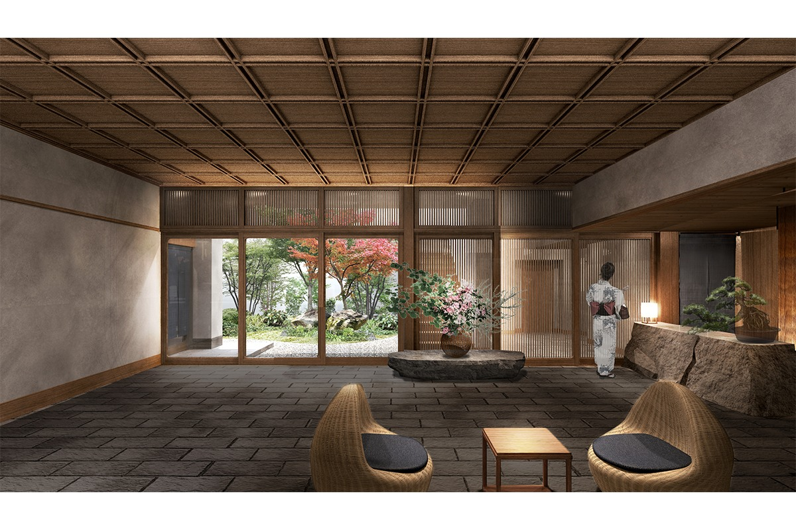
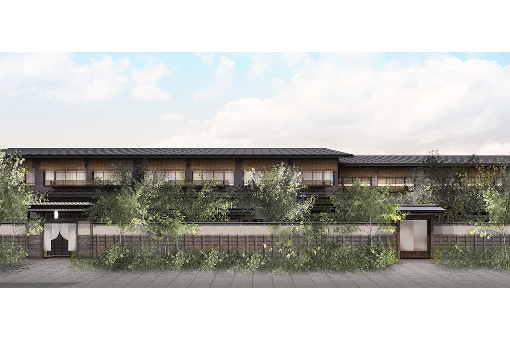
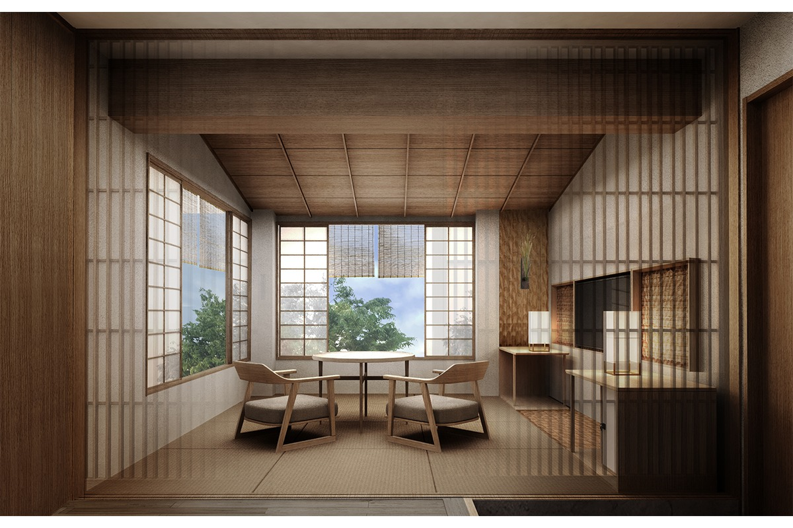
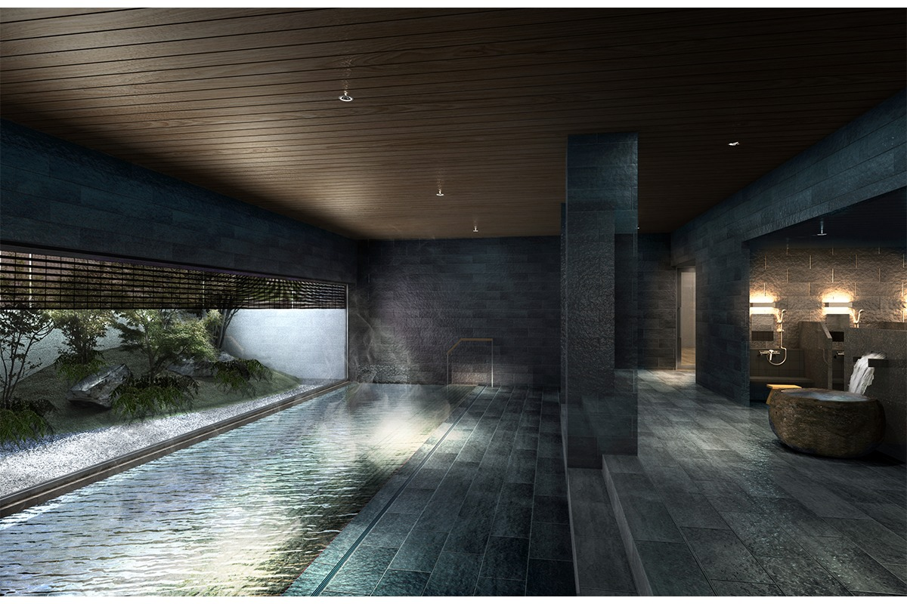
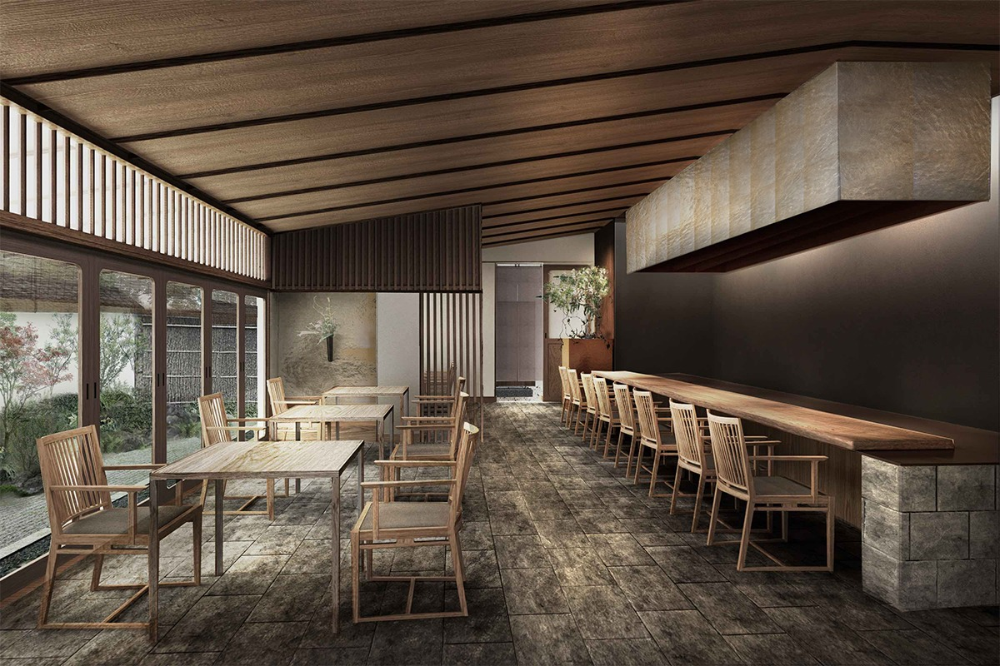
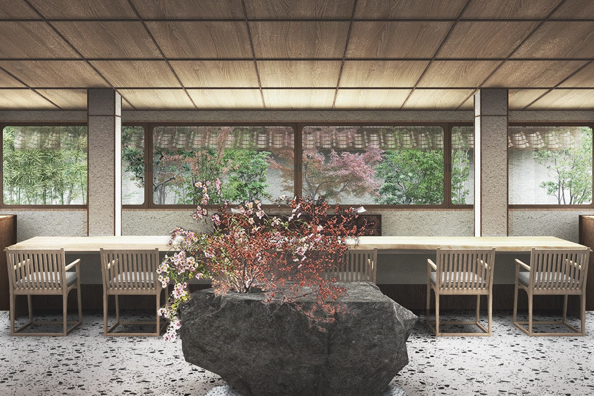

Токио · Сэтагая-Дайта · рёкан
YUEN BETTEI DAITA: рёкан с онсэном из Хаконэ в минуте от станции Сэтагая-Дайта

В нескольких минутах ходьбы от шумной Симокитадзавы, у тихой станции Сэтагая-Дайта, в 2020 году открылся рёкан YUEN BETTEI DAITA. Его задумали так, чтобы гость чувствовал себя словно в горной деревне с горячими источниками, а не в большом городе.
Рёкан
Горный онсэн у пригородной станции
YUEN BETTEI DAITA принял первых гостей 28 сентября 2020 года. Он стоит прямо у станции Сэтагая-Дайта на линии Одакю, а до Симокитадзавы отсюда около восьми минут пешком. Вокруг сохранились старые японские дома и много зелени, и сам рёкан невысокий.
Внутри всё строится на фактуре материалов, игре света и тени и ощущении глубины, и здесь легко ненадолго забыть о городских буднях.

О соседнем квартале лавок в Симокитадзаве можно прочитать в статье о BONUS TRACK.
Номера
Дощатый пол, татами и широкий подоконник
В рёкане 35 номеров семи типов: есть номера с садиком, с открытой купальней и двухуровневые. В каждом три зоны: деревянный пол, татами и «хироэн», широкая полоса у окна, где удобно сидеть и смотреть на улицу. Обувь здесь снимают, как дома.

Номера небольшие, но японцу в них сразу становится спокойно, а иностранный гость видит в них японскую культуру.
Онсэн
Горячая вода из Хаконэ
Главное в рёкане это общая баня с открытой купальней. Воду для неё везут из Хаконэ: это «Асиноко онсэн Цуцудзи-но ю», собственный источник отеля у озера Асиноко. В женской бане есть паровая сауна с ароматом, составленным специально для рёкана, в мужской сухая сауна и купель с холодной водой.

Приезжать на онсэн можно и без ночёвки, если взять план вместе с едой в ресторане или чайной. По плану 2020 года такие визиты начинались с 12 октября.
Кухня
«Цукикагэ»: ресторан и чайная по стихам поэта
На первом этаже работают ресторан японской кухни Tsukikage и чайная Saryo Tsukikage. Оба названы по сборнику танка «Цукикагэ» («Лунный свет») Мокити Сайто, который провёл последние годы жизни в Дайте.


В ресторане повар готовит сезонный ужин-кайсэки: из разных уголков Японии берут то, что именно в этот год лучше всего на вкус. К ужину сомелье сакэ подбирает напитки, и только японского производства.
Чайная напоминает о прошлом квартала: когда-то в Дайте тянулись чайные поля и здесь занимались чаем. Поэтому и в чайной главное это чай. Здесь удобно посидеть после бани, а вечером чайная работает как бар. Для тех, кто не живёт в рёкане, ресторан и чайную по плану 2020 года открывали с 12 октября.
Отдых
Массаж в номере и спа в соседнем здании
После онсэна можно заказать процедуры прямо в номер: расслабляющий массаж или массаж с маслами, которые смешивают для рёкана. В 2020 году в отдельном здании напротив главного корпуса готовили спа, куда смогут приходить и те, кто здесь не ночует. Открыть его собирались весной 2021 года.
YUEN BETTEI DAITA
- Адрес
- Токио, Сэтагая, Дайта, 2-31-26
- Телефон
- +81 3-5431-3101
- Номера
- 35
- Заезд / выезд
- 15:00 / 11:00 (2026)
- Как добраться
- от станции Сэтагая-Дайта линии Одакю 1 минута пешком, от станции Симокитадзава 8 минут